從清溪里沿馬路一直走到道樂里油菜花田山坡上的展望台, 接著轉右循馬路旁的木棧步道往下走, 於下午五時四十分返回青山島港, 時值黃昏, 憑欄而望, 青山島港的景色十分柔和, 令人留戀和愛上這寧靜的小島。
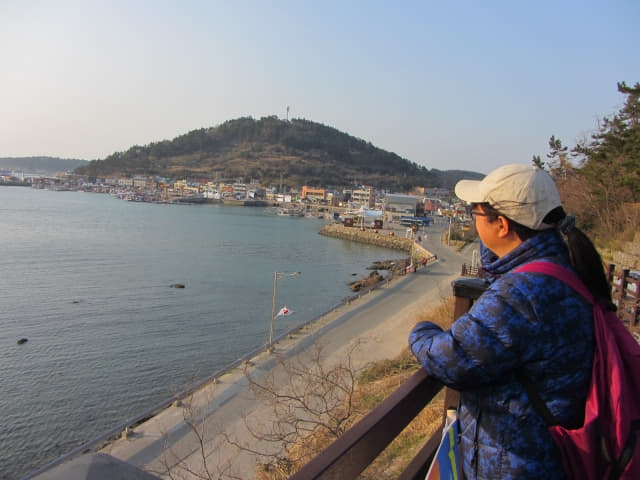
接著是沿青山島港旁步行往青山島碼頭, 在附近找餐廳吃晚飯。
經過這道清二里石碑, 向前走一會便來到青山島碼頭前的餐廳區, 滿以為這裡有幾間海鮮餐廳, 應該很容易便找到合適的餐廳, 怎料所有餐廳都沒有開門營業, 包括我們滋味鮑魚午餐的那間「막끌리네식당」餐館! 怎麼辦! 莫非今晚要「紮砲」?
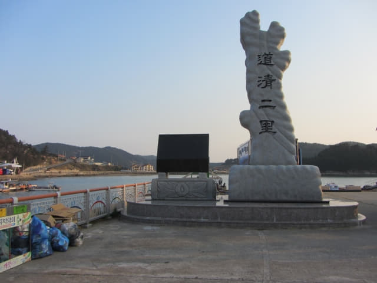
在餐廳區前後巡了幾次, 正在徬徨之際, 有一位坐在其中一間餐館門前的叔叔告訴我們: 在前面路口轉左, 那裡有一間餐廳, 你們可以往那裡吃晚餐的。
烤豬肉晚餐
按叔叔所指示的方向, 匆匆沿昏暗的馬路走到餐廳, 原來是在一條小巷內的, 是一間烤豬肉店。根本沒有其他選擇, 便進入餐廳, 叫了兩客烤豬肉。坐了一會, 食物陸續送上, 放滿了整個桌子, 十分豐富!
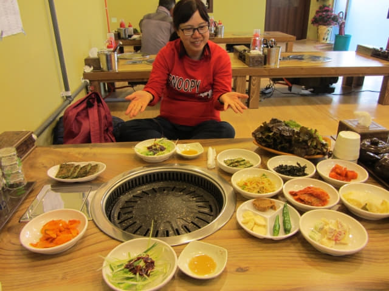
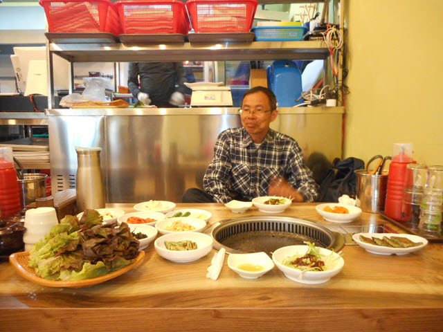
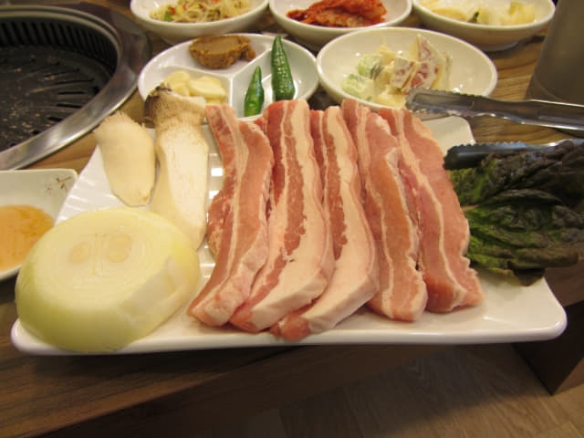
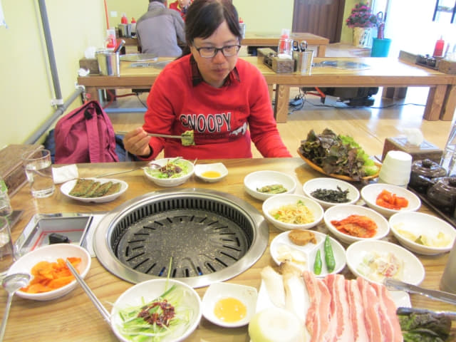
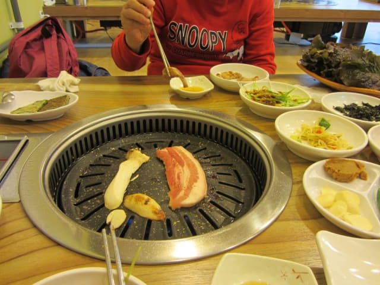
這一餐十分豐富, 食物的味道很好, 吃得飽飽的, 結帳是25,000韓元。因原本打算在青山島是吃鮑魚或海鮮的, 所以感覺並不是很滿足, 從沒想到來青山島是吃烤豬肉的!
吃完晚餐, 離開餐廳, 看見餐廳對面有一間好像雜貨店的超級市場, 便進內買了明天的早餐: 一盒蛋糕 (有六個)和一個碗麵, 但碗麵竟然又忘記取筷子!
沿昏暗小路走到青山島港旁, 望望海邊另一邊道樂里村莊的方向, 我們下榻的民宿就在那裡, 除了天空上點點閃爍星星外, 四周一片漆黑, 根本沒可能步行返回民宿, 現在才知道, 為什麼民宿主人那麼緊張如何聯絡我們!
往警察局求助 打電話給民宿
正當徬徨如何返回民宿, 突然想起警察局離這裡不遠, 便走到那裡求助。當值的警察馬上打電話給民宿, 接著說稍後會有人駕車來接我們, 叫我們坐在沙發等候。想不到這旅程多次得到警察的熱心幫助!
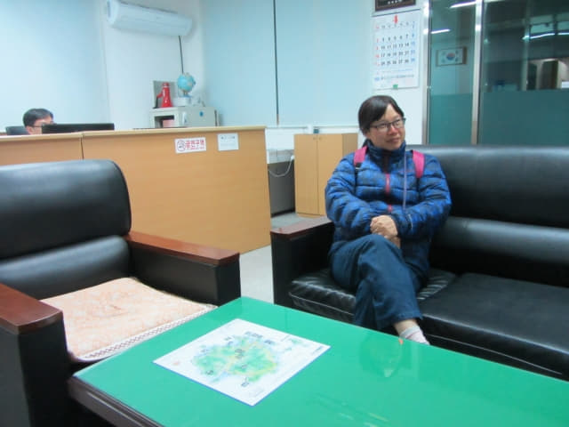
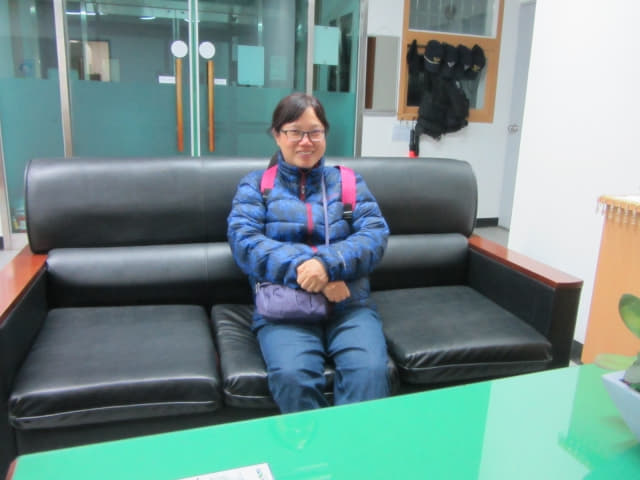
等了約五分鐘, 民宿主人匆匆的推門進來, 和警察道別, 走出警察局, 上了吉普車, 穿過漆黑的田野, 約三分鐘便返回民宿。下了車, 民宿在漆黑中耀眼光亮, 門前的招牌原來會轉變顏色的!
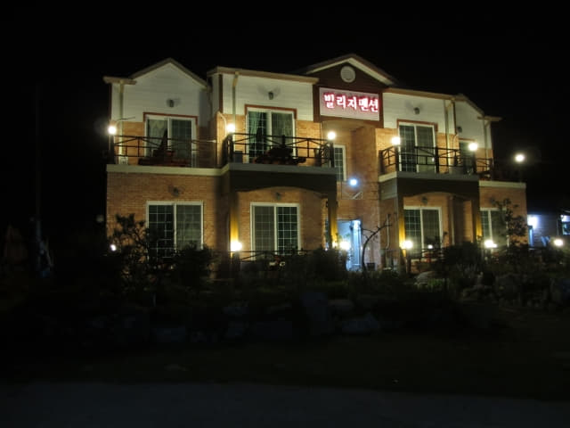
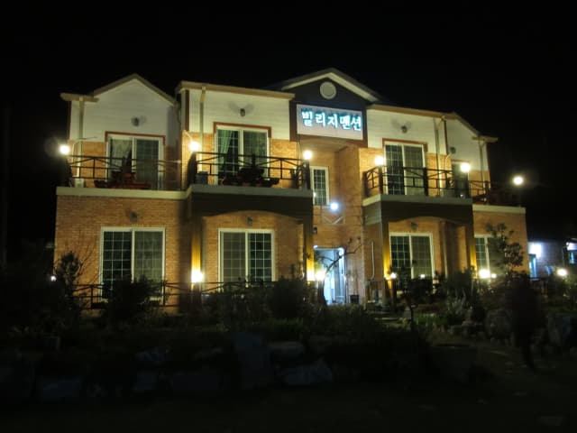
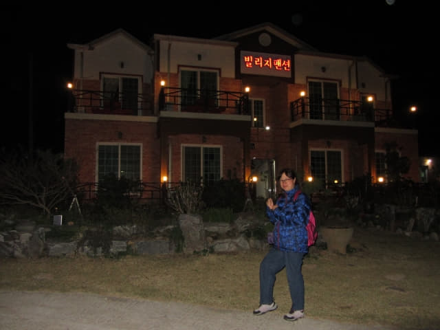
返回一樓房間, 接著民宿主人送了兩個超大的蘋果給我們吃, 和我們一起坐在地上閒談了一會, 才和我們說晚安, 真是十分熱情。
吃了其中一個蘋果, 走出陽台, 寧謐的黑夜, 四周田野中的村莊散落點點燈火, 隱約聽到蟋蟀的嗚聲; 抬頭望望天空, 繁星閃閃, 雖然沒有我兒時鄉村夜空那白色多過黑色的震撼, 也沒有那麼高清, 但很久都沒有看過這星羅棋佈的夜空, 今晚肯定有一個甜蜜的夢鄉!
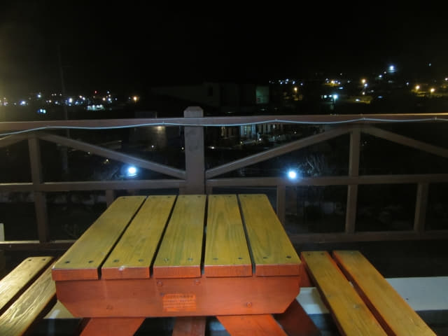
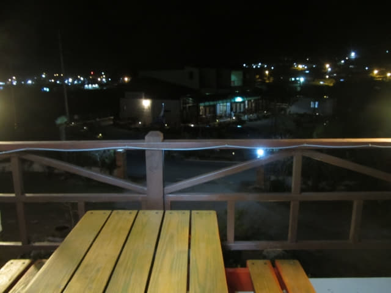